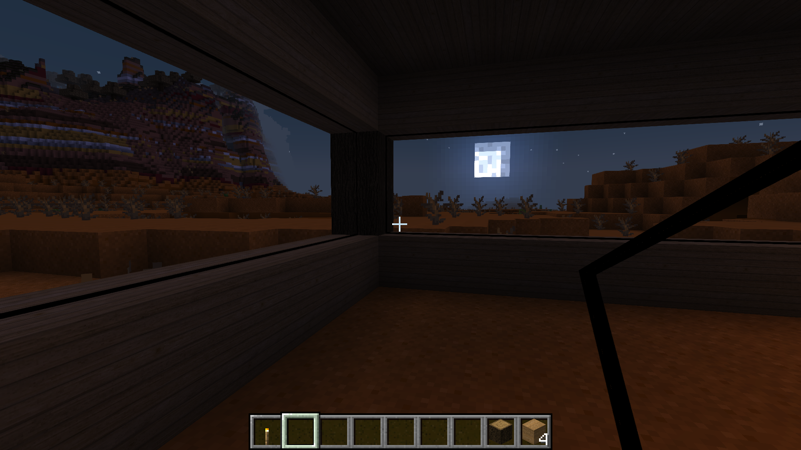
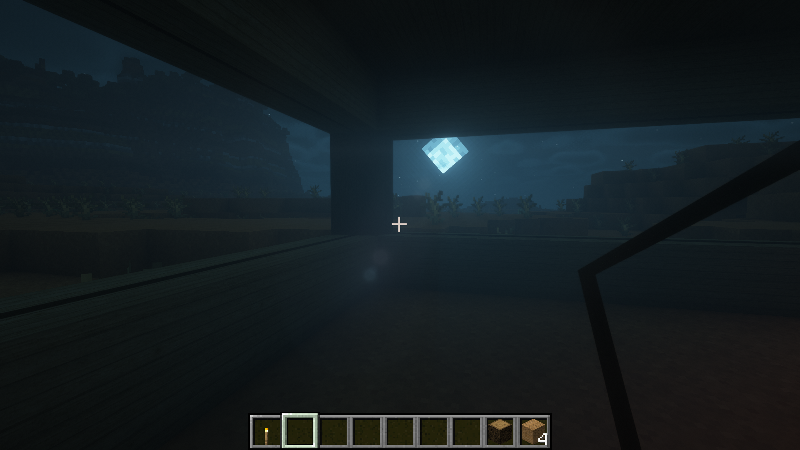
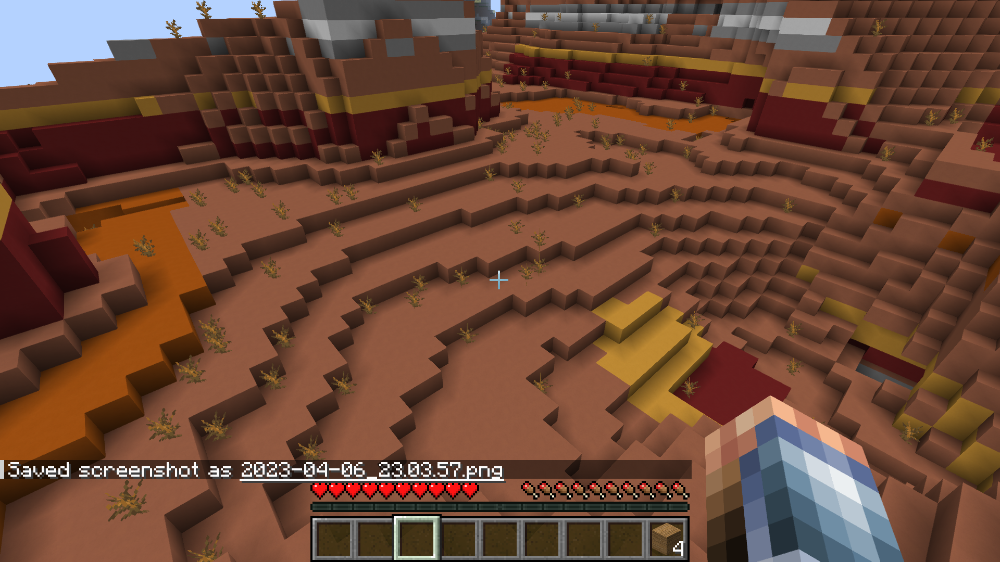
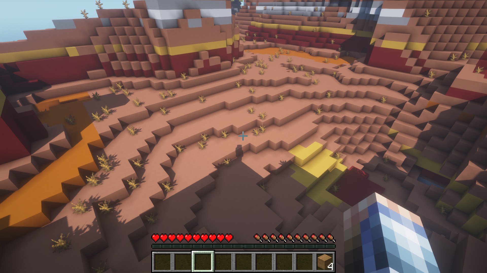
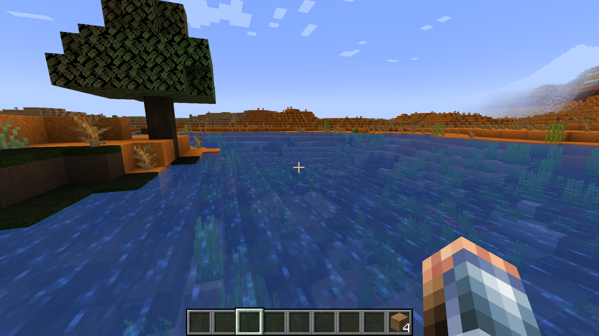
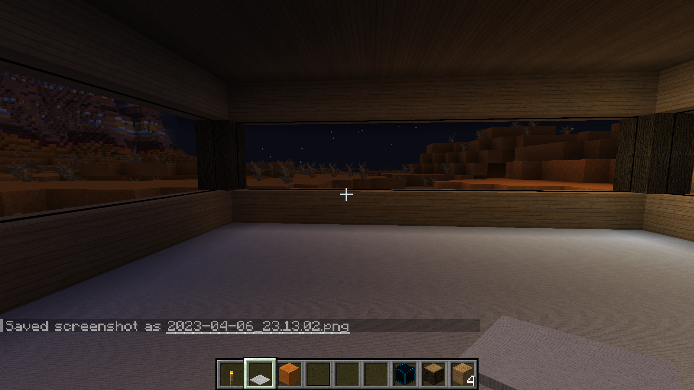
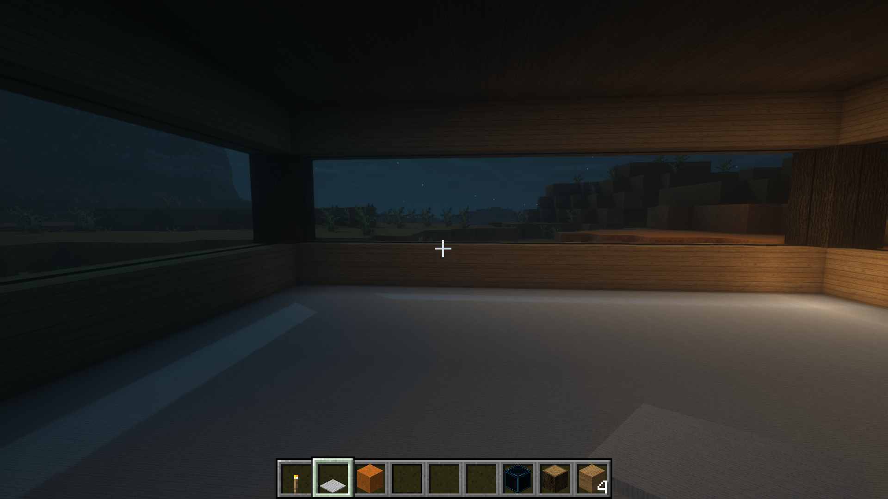

CS 184: Computer Graphics and Imaging, Spring 2023
Final Project Proposal - Minecraft Shaders
Joey Zhao, Massimo Tseng, Jason Gong, Shawn Zhao
Project Summary
For this project, we are going to create a Minecraft shaderpack. It will better mimic real-life lighting by implementing volumentric fog, more realistic shadows, water texture and reflections, and ray tracing.
Project Description
We are trying to solve Minecraft unrealistic lighting. It follows a linear fall off between where a light source is and the surrounding area. By providing more realistic lighting, we can increase the quality of the player experience.
The biggest challenge nagivating existing mods and the framework for creating shaderpacks. No one on our team has experience with shaders but we all found it very interesting. We are getting started by following some tutorials online with setting up and getting our shaders running. However, from there, we will implement formulas and methods we see online for the techniques we want to implement.
Deliverables
Here are examples of what we are trying to implement. These images were taken in Minecraft using the BSL Shaderpack and a 128x realistic texture pack.
|

Default "fog"
|

Shader fog
|
|

Default shadows at a distance
|

Shader shadows at a distance
|
|

Default water
|
 Shader water
Shader water
|
|

Default lighting
|

Shader lighting with ray tracing
|
Since shaderpacks run in minecraft, we could bring a laptop with our shaderpack installed for viewers to test it out in real-time.
We will also make a video showcasing the different effects that we have created.
To measure quality and performance, we can compare to other shaderpacks that are publicly available. For performance, Minecraft automatically tracks frames per second, which is a great metric to test performance.
For quality, we can compare how our game looks compared to other popular shaderpacks. If we mimic similar visual effects, it will be successful.
Goals
What we plan to deliver
We plan to deliver a functioning shaderpack with atleast 3 of our intended effects working. We are weary of potential problems that might arise since our group doesn't have experience with creating shaders.
In addition, we are worried that the debugging process and development might take longer than we are currently anticipating. However, to be successful, we want to deliver a working product that shows improvements in the graphics.
What we hope to deliver
Ideally, we hope to have a finished product with all of the effects we have detailed working. In addition, we hope that performance is above 60 frames per second for a playable experience.
If things go well and we get ahead of schedule, we ideally would like to improve the performance using fps as a metric. A good looking game has to also be playable, and increasing the framerate helps less graphically powerful devices run our shaders.
Timeline
Resources